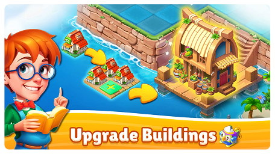
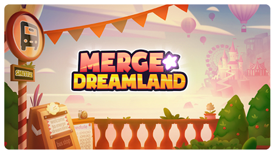

<section class="developers">
    <div class="container section">
        <h2 class="maintitle">Developers’ Favorite Games</h2>
        <p class="secondtitle"><span>What Inspires the Merge Dreamland Team?</span><br>
            Our developers are passionate gamers, and their inspirations are reflected in Merge Dreamland’s enchanting
            experience.
            Here are some of their all-time favorite games:

        </p>
        <ul class="list">
            <li class="item card-1">
                <div class="item-circleReverse developers-circle">
                    <h3 class="item-title">The Legend<br>
                        of Zelda</h3>
                </div>
                <div class="item-contentReverse developers-content">
                    <p class="item-text">Breath of the Wild – Open-world exploration and discovery.
                    </p>
                </div>
            </li>


            <li class="item card-2">
                <div class="item-circleReverse developers-circle">
                    <h3 class="item-title">Stardew<br>
                        Valley</h3>
                </div>
                <div class="item-contentReverse developers-content">
                    <p class="item-text">The perfect blend of relaxing gameplay and rewarding progression.
                    </p>
                </div>
            </li>


            <li class="item card-3">
                <div class="item-circleReverse developers-circle">
                    <h3 class="item-title">Merge<br> Dragons!</h3>
                </div>
                <div class="item-contentReverse developers-content">
                    <p class="item-text">The pioneer of the merge genre that showed us the magic of combining
                        elements.</p>
                </div>
            </li>


            <li class="item card-4">
                <div class="item-circleReverse developers-circle">
                    <h3 class="item-title">Hollow<br> Knight</h3>
                </div>
                <div class="item-contentReverse developers-content">
                    <p class="item-text">Beautiful world-building and immersive storytelling</p>
                </div>
            </li>
        </ul>
        <p class="text-action">Each of these games influenced different aspects of Merge Dreamland, shaping
            it into the game you love today.

        </p>
        <div class="swiper mySwiper">
            <div class="swiper-wrapper">
                <div class="swiper-slide">
                    
                </div>
                <div class="swiper-slide">
                    
                </div>
                <div class="swiper-slide">
                    
                </div>


            </div>
        </div>
    </div>
</section>